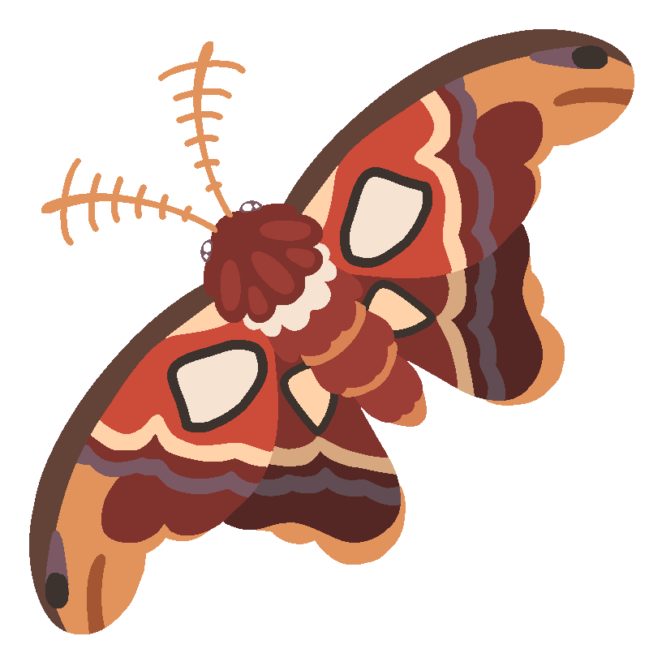
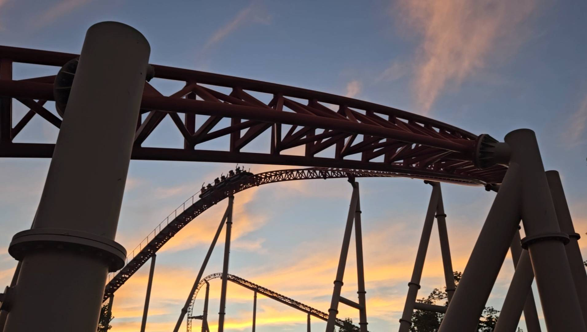
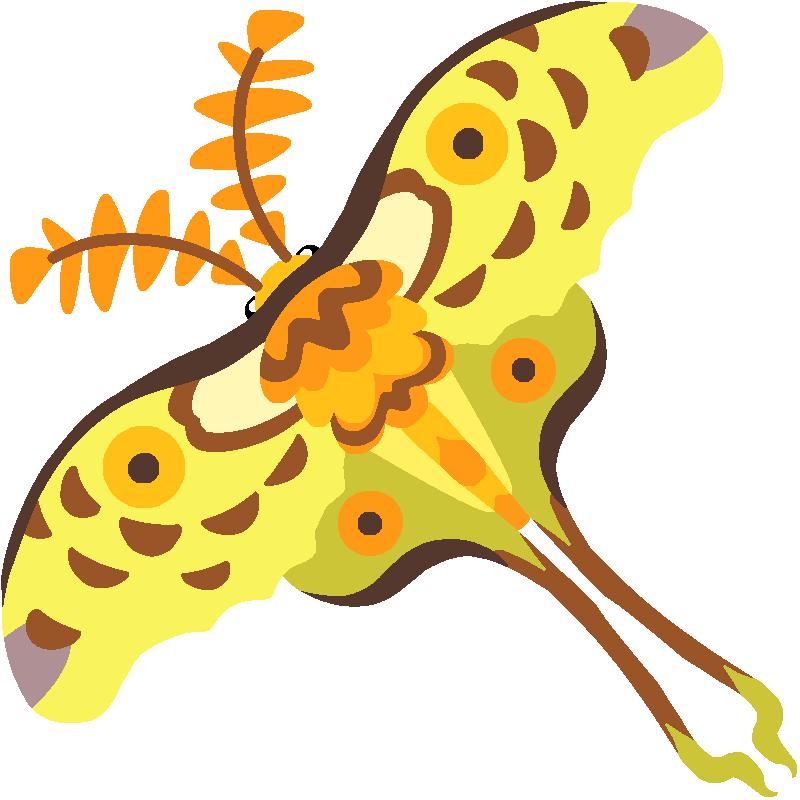

And this will be my test of posting a video! I've chosen a clip of Slay the Spire 2, including me testing a mod I was working on at the time. Nothing special, just something I had on hand that I take interest in.

Photoshoot!
November 22, 2026
For this image test, I've chosen a picture of the ride Maverick at Cedar Point! I took this around sunset a few years back, and it's still one of my favorite photos I've ever taken to this day. It just turned out so well!


Big Changes!
November 22, 2026
I'm back! Today I'm updating the site to include some other actual pages, including ways to contact me, an actual about me instead of just the little blurb in my first post, and coding projects I've participated on in the past. Those other projects are gonna be pretty much just mods for Slay the Spire at the moment, but one day that'll probably change! I'll also be testing adding images and videos in my next two posts, so we'll see how that goes!
Welcome to Starshiner Blogs!
November 15, 2026
Heya! I'm Starshiner Wing, your guide through this blog site! I'm developing this site both as my project for a web development course, and as somewhere I can cast my thoughts out for the world to read! Once I've got the site in shape to start actually posting, I'll be talking about my interests, my hobbies, and just whatever I think belongs up here. I've got it all colored up in foresty colors because I like the soft tones, and I'll be dotting moth stickers here and there later to add some color! Be sure to check back in at some point and see how it's looking!